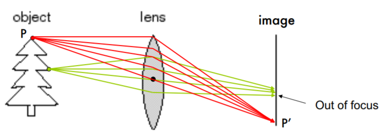

Camera Model
Pinhole Camera
This pinhole camera system consists of a barrier and a small aperture between the 3D object and a photographic film/image plane. \(f\) is the focal length that between the pinhole and the film; \(O\) is the aperture/center of the camera. Sometimes, the image plane is placed between \(O\) and the 3D object at a distance \(f\) from \(O\). In this case, it is called the virtual image.
Given a point \(P = [x, y, z]^T\) from a 3D object visible to the pinhole camera, the projection on the image plane \(\Pi'\) is the intersection of image plane \(\Pi'\) and the line \(PO\), written as \(P' = [x', y']^T\). The pinhole itself will also be projected onto the image plane at \(C'\). With the notions above, then we can define a coordinate system \([i, j, k]\) centered at \(O\) and aligned the axis \(k\) with \(OC'\). Such coordinate system is known as the camera coordinate system. The line \(OC'\) is called the optical axis of the camera system.
Using the law of similar triangles we get
\[\begin{aligned} x' &= f\frac{x}{z} \\ y' &= f\frac{y}{z} \end{aligned}\]
Influence of Aperture
- Each point on the 3D object emits multiple rays of light outwards.
- With a large aperture, every point on the film will be influenced by light rays emitted from multiple points on the 3D object, which causes blurring.
- With a smaller aperture, only one (or a few) of these rays of light passes through the aperture and hits the film. Then we may assume a one-to-one mapping between points on the 3D object and the film.
- A smaller aperture size causes less light rays to pass through, resulting in crisper but darker images.
Paraxial refraction model
The fundamental problem presented by the pinhole formulation is: How to develop cameras that take crisp and bright images?
In modern cameras, the problem is solved by focusing or dispersing light by lens. Ideally, all rays of light emitted by point \(P\) will be refracted and converge to a single point \(P'\).

The figure above shows that given a specific setting, some specific point will converge properly on the image plane. However, others that be closer or further from the image plane than \(P\) will converge in back or front of image plane respectively. As a result, on the image plane, the corresponding projection will be blurred or out of focus. The range of distance of each lens that makes objects "in focus" is called depth of field.
Another important property of lens is: All light rays parallel to the optical axis will intersect with optical axis at the same point after passing through the lens (and vise versa, according to the reversibility of optical path); The point then is known as the focal point. The focal length in this model is referred to the distance between the focal point and the center of the lens.
Again, using the law of similar triangles we get
\[\begin{aligned} x' &= z'\frac{x}{z} \\ y' &= z'\frac{y}{z} \end{aligned}\] where \(z' = f + z_0\)
Lens Equation
\[\frac{1}{z'} - \frac{1}{z} = \frac{1}{f}\]
Where \(z\) is negative and \(-z\) represents the distance between object and optical origin. When \(z \to \infty\), \(z' \to f\)
Lens Distortion
In optics, a thin lens is a lens with a negligible thickness. In real life, different portions of the lens have differing focal lengths, the artifacts caused by it is called Radial distortion.
| Normal | Pincushion | Barrel |
|---|---|---|
| Invariant | Image magnification increase with the distance from the optical axis | Image magnification decrease with the distance from the optical axis |
Image Formation
Given the point \(\mathbf{p} = [X,Y,Z]^T\) in the Euclidean space, the perspective projection equation that forms a point \(\mathbf{p}' = [x,y]^T\) on the Euclidean plane is, \[\begin{aligned} x &= f\frac{X}{Z} \\ y &= f\frac{Y}{Z} \end{aligned}\]
In projective space, it is represented as \[\begin{bmatrix}x_h\\y_h\\w_h\end{bmatrix}=\begin{bmatrix}f&0&0&0\\0&f&0&0\\0&0&1&0\end{bmatrix}\begin{bmatrix}X\\Y\\Z\\1\end{bmatrix}\]
And \[\begin{aligned} x &= \frac{x_h}{w_h} = f\frac{X}{Z} \\ y &= \frac{y_h}{w_h} = f\frac{Y}{Z} \end{aligned}\]
Other Projection
Weak perspective projection
When the relative scene depth is small compared to its distance from the camera, we could treat the depth of all 3D point as \(Z_0\) uniformly, that is
\[\begin{aligned} x &= \frac{f}{Z_0}X \\ y &= \frac{f}{Z_0}Y \end{aligned}\]
In projective space, it is represented as \[\begin{bmatrix}x_h\\y_h\\w_h\end{bmatrix}=\begin{bmatrix}f&0&0&0\\0&f&0&0\\0&0&0&Z_0\end{bmatrix}\begin{bmatrix}X\\Y\\Z\\1\end{bmatrix}\]
| Normal Perspective Projection | Weak Perspective Projection |
|---|---|
 |
Orthographic (affine) projection
\[\begin{aligned} x &= X \\ y &= Y \end{aligned}\]
In projective space, it is represented as \[\begin{bmatrix}x_h\\y_h\\w_h\end{bmatrix}=\begin{bmatrix}f&0&0&0\\0&f&0&0\\0&0&0&1\end{bmatrix}\begin{bmatrix}X\\Y\\Z\\1\end{bmatrix}\]
Perspective Projection vs. Perspective Transformation
- Perspective Projection calculates the perspective view of a 3D object onto a 2D projection plane.
- Perspective Transformation calculates how the perspectively foreshortened and projected polygons will overlap, without discarding the z-values.
- Perspective projections is not necessarily a perspective projection but is definitely a projective transformation; that is, projective transformations form a group, whereas perspective projections do not.
However, the coordinates on the image plane does not directly correspond to the coordinates on the actual digital images.
Camera Coordinate System to Pixel Coordinate
- A digital images typically have their origin at the lower-left corner. Thus, we need to introduce a translation vector \(c_x, c_y\) to shift the origin back. then \[\begin{aligned} x &= f\frac{X}{Z} + c_x\\ y &= f\frac{Y}{Z} + c_y \end{aligned}\]
- Digital image are expressed in pixels, while focal length and points in image plane are represented in physical measurements (e.g. centimeters). So we must introduce two new parameters \(k\) and \(l\) that give us the relationship to transfer the physical measurement into pixel of two directions respectively, with the unit like \(\frac{\text{pixels}}{\text{cm}}\), then \[\begin{aligned} x &= k \cdot f\frac{X}{Z} + c_x = \alpha \frac{X}{Z} + c_x\\ y &= l \cdot f\frac{Y}{Z} + c_y = \beta \frac{Y}{Z} + c_y \end{aligned}\]
- An image is called skewed when the camera coordinate system is skewed i.e. the angle between the two axes are slightly larger or smaller than 90 degrees. Most cameras have zero-skew, but some degree of skewness may occur because of sensor manufacturing errors. Note that skew should be applied before the scaling, then
\[\begin{aligned} x &= \alpha (\frac{X}{Z} - \cot(\theta) \frac{Y}{Z}) + c_x\\ y &= \frac{\beta}{\sin(\theta)} \frac{Y}{Z} + c_y \end{aligned}\]
| Normal | Skewed | Combined |
|---|---|---|
It's useful to represent the transformation in a linear form instead of non-linear form. Then we apply the transformation in the homogeneous coordinates. Then the image formation involves the projection of points in \(\cal P^3\) (the world) to points in \(\cal P^2\) (the image plane). Given \(P'_h = [x, y, w], P_h = [X, Y, Z, 1]\), the transformation could be written as
\[P'_h = \begin{bmatrix} x\\y\\w\\ \end{bmatrix} = \begin{bmatrix}\alpha & -\cot(\theta) & c_x & 0 \\ 0 & \frac{\beta}{\sin(\theta)} & c_y & 0 \\ 0 & 0 & 1 & 0 \end{bmatrix} \begin{bmatrix} X\\Y\\Z\\1 \end{bmatrix} = \begin{bmatrix}\alpha&-\cot(\theta)&c_x\\0&\frac{\beta}{\sin(\theta)}&c_y\\0&0&1\end{bmatrix}\begin{bmatrix}\mathbf{I}&\mathbf{0}\end{bmatrix}P_h = K\begin{bmatrix}\mathbf{I}&\mathbf{0}\end{bmatrix}P_h\]
where \(K\) is often referred to as the camera matrix. \(K\) has 5 degrees of freedom: 2 for focal length, 2 for offset, and 1 for skewness.
Finally, in pixel coordinates, \(P'_i = [\frac{x}{w}, \frac{y}{w}]^T\)
World Reference System to Camera Reference System
The calculation above based on an assumption that the coordinate of \(P\) is given in the camera reference system. So we may need to explicitly transform the coordinates in the world reference system as \(P_w\) to camera reference system as \(P\). Given a \(3\times 3\) rotation \(R\) and translation \(3\times 1\) \(\mathbf{t}\), for each \(P_w\), the corresponding point in camera reference system will be \[P_h = \begin{bmatrix} \mathbf{R} & \mathbf{t} \\ \mathbf{0} & 1\end{bmatrix} P_w\]
The complete mapping from a 3D point \(P\) in world reference system to the homogeneous pixel coordinate is: \[P'_h = K \begin{bmatrix} R & t \end{bmatrix} P_w = MP_w\]
Given \(P'_h = [x, y, w]\), then \(P'_i = [\frac{x}{w}, \frac{y}{w}]^T\) is the position on the digital image.
The \(3\times4\) projection matrix \(M\) has 11 degrees of freedom totally: 5 from intrinsic matrix, 3 from extrinsic rotation, 3 from extrinsic translation. And the scaling is unimportant. \(M\) could also be treat as three row vectors \(M = \begin{bmatrix}--\mathbf{m}_1--\\--\mathbf{m}_2--\\--\mathbf{m}_3--\end{bmatrix}\) ,then given \(P'_h = \begin{bmatrix}x\\y\\w \end{bmatrix}MP_w\), \[P'_i = \begin{bmatrix}\frac{x}{w}\\\frac{y}{w}\end{bmatrix} = \begin{bmatrix}\frac{\mathbf{m}_1\cdot P_w}{\mathbf{m}_3\cdot P_w}\\\frac{\mathbf{m}_2\cdot P_w}{\mathbf{m}_3\cdot P_w}\end{bmatrix}\]
Camera Calibration
This problem of estimating the extrinsic and intrinsic camera parameters is known as camera calibration.
We can describe this problem in the context of a calibration rig. The rig usually consists of a simple pattern with known dimensions. It defines the origin \(O_w\) and axis \(i_w, j_w, k_w\) of the world reference frame. Given the known points \(P_{w1}, ..., P_{wn}\) in world reference frame, and the corresponding points in pixel coordinate \(P_{i1}', ..., P_{in}'\), we could estimate the mapping between them. Since \(M\) has 11 degrees of freedom, we need at least 11 equations, therefore at least 6 correspondence between points.
For each point in pixel coordinate \([u_i, v_i]\), and the corresponding point in world reference frame \(P_{i}\), here \(i\) is the index, we have the equation: \[\begin{aligned} - \mathbf{m}_1\cdot P_{i} + \mathbf{m}_3\cdot P_i \cdot u_i &= 0\\ - \mathbf{m}_2\cdot P_{i} + \mathbf{m}_3\cdot P_i \cdot v_i &= 0 \end{aligned}\]
Then the n points will form a linear system \[\begin{aligned} - \mathbf{m}_1\cdot P_{1} + \mathbf{m}_3\cdot P_1 \cdot u_1 &= 0\\ - \mathbf{m}_2\cdot P_{1} + \mathbf{m}_3\cdot P_1 \cdot v_1 &= 0\\ \vdots&=\vdots\\ - \mathbf{m}_1\cdot P_{n} + \mathbf{m}_3\cdot P_n \cdot u_n &= 0\\ - \mathbf{m}_2\cdot P_{n} + \mathbf{m}_3\cdot P_n \cdot v_n &= 0 \end{aligned}\]
This can be formatted as a matrix-vector product shown below: \[\begin{bmatrix} - P^T_{1} & \mathbf{0}^T & u_1 \cdot P^T_1 \\ \mathbf{0}^T & - P^T_{1} & v_1 \cdot P^T_1 \\ \vdots \\ - P^T_{n} & \mathbf{0}^T & u_n \cdot P^T_n \\ \mathbf{0}^T & - P^T_{n} & v_n \cdot P^T_n \\ \end{bmatrix} \begin{bmatrix} \mathbf{m}^T_1 \\ \mathbf{m}^T_2 \\ \mathbf{m}^T_3 \end{bmatrix} = Tm = \mathbf{0} \]